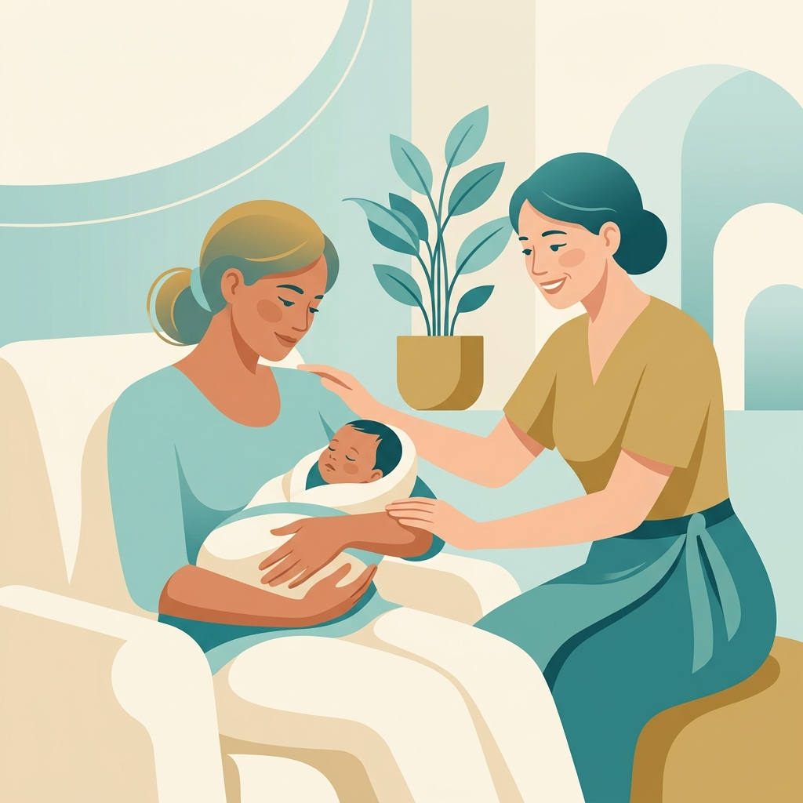

Our Services
Postnatal Care
Holistic care tailored for you. Welcome to our specialized service. At Ved Garbh Sanskar, we utilize authentic Ayurvedic principles combined with modern care to ensure the best outcomes for our families.
Book ConsultationBenefits Section
- Improves overall physical and mental well-being.
- Rooted in ancient Ayurvedic wisdom.
- Personalized care plans tailored to individual needs.
- Guided by experienced Ayurvedic doctors.
Why Choose This Service
Our approach goes beyond surface-level treatments, focusing on deep, holistic healing and preparation. We provide a sanctuary dedicated to profound spiritual, emotional, and physical wellness.
Process / Program Details
The program consists of detailed consultations, personalized regimens, continuous monitoring, and structured activities designed to nurture and empower you at every stage of the journey.